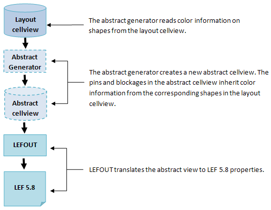
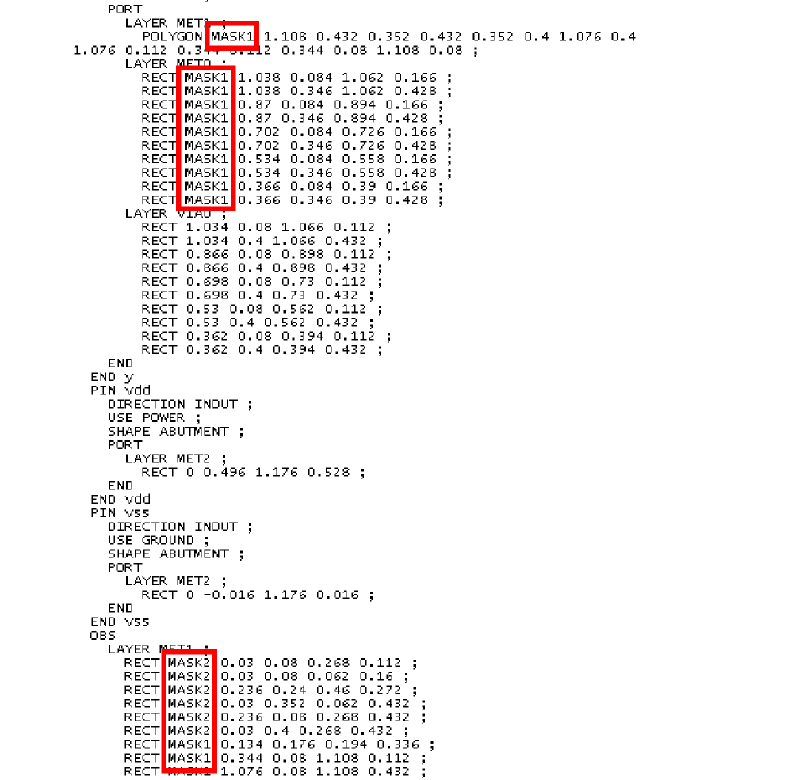

8
Multi-Patterning Technology Support in Abstract Generator
Virtuoso® Abstract Generator supports Multi-Patterning Technology (MPT). To handle color, the abstract representation includes the color of pins and obstructions. The following diagram depicts the process of generating a color-annotated abstract cellview from a color-annotated layout cellview and exporting the abstract cellview to LEF 5.8.

Pin and obstruction colors are represented in LEF 5.8 as:

Abstracts do not include cluster information because routing applications such as Innovus may later shift the colors on a per-instance basis to avoid color conflict.
Return to top